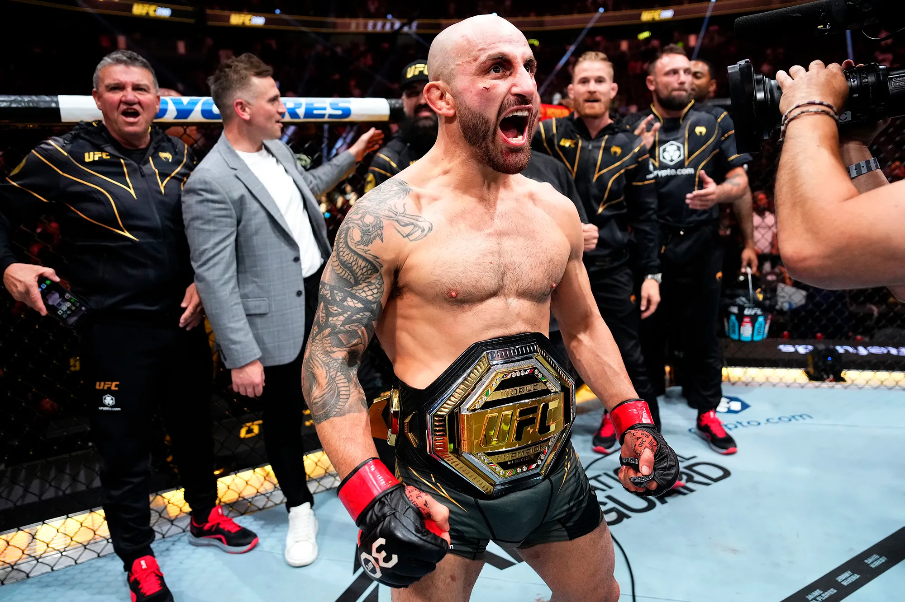

|
 |
|
| Nombre completo | Alexander Volkanovski |
| Nacimiento | 29 de septiembre de 1988 Wollongong, Australia |
| Apodo | The Great |
| Nacionalidad | Australiana |
| Altura | 1,68 m |
| Peso | Peso pluma (145 lb) |
| Organización | Ultimate Fighting Championship (UFC) |
| Título | Campeón Mundial de Peso Pluma de la UFC |
Alexander Volkanovski (Wollongong, Australia; 29 de septiembre de 1988) es un artista marcial mixto australiano que compite en la división de peso pluma de la Ultimate Fighting Championship (UFC). Es conocido como uno de los mejores peleadores de peso pluma de todos los tiempos y ha sido campeón mundial de la UFC en múltiples ocasiones.
Volkanovski nació en Wollongong, Australia, y antes de entrar al mundo de las artes marciales mixtas fue jugador de rugby league. Comenzó a entrenar en MMA en 2011 y debutó como profesional en 2012, peleando en organizaciones regionales de Oceanía antes de firmar con la UFC en 2016.
Volkanovski hizo su debut en la UFC el 26 de noviembre de 2016 y se estableció rápidamente como un contendiente en la división de peso pluma. En diciembre de 2019, derrotó a Max Holloway por decisión unánime en UFC 245 para ganar el Campeonato Mundial de Peso Pluma, convirtiéndose en el primer luchador australiano en ganar un título de la UFC.
Durante su primera etapa como campeón, realizó múltiples defensas exitosas del título, derrotando a grandes nombres como Brian Ortega, Yair Rodríguez y Max Holloway en varias ocasiones. Después de perder brevemente el cinturón ante Ilia Topuria en UFC 298, Volkanovski recuperó el título al vencer a Diego Lopes por decisión unánime en UFC 314 en abril de 2025.
En febrero de 2026, defendió con éxito su título en UFC 325, derrotando nuevamente a Diego Lopes por decisión unánime frente a su público en Australia.
Volkanovski ha conseguido numerosas victorias en su carrera combinando nocauts, decisiones y sumisiones, consolidándose como uno de los peleadores más consistentes en su división dentro de la UFC.